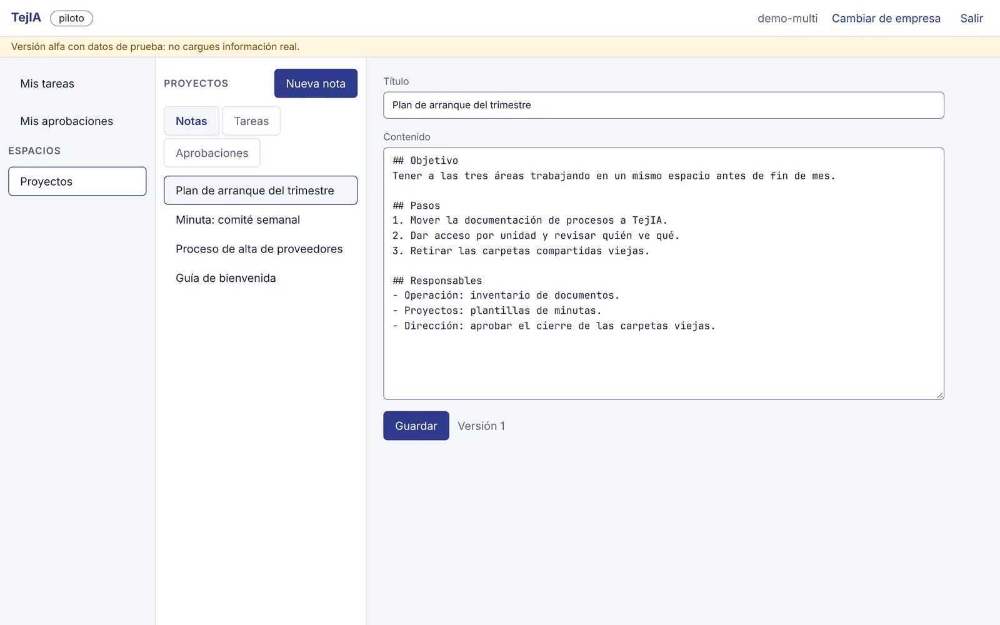
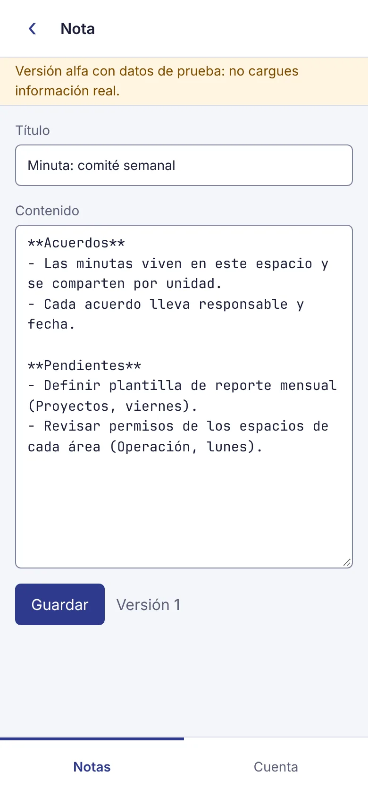

Suite de trabajo · hecha en México
Tu empresa, tejida en un solo lugar.
TejIA reúne documentos, conversaciones, aprobaciones y datos del equipo bajo los mismos permisos. Lo que compartes en un lugar se respeta en todos; lo que retiras deja de verse en la siguiente consulta.
Alfa Hoy funciona la base: notas con permisos por persona, grupo y unidad, en la computadora y el celular. Hoy es de uso interno, en prueba; todavía no hay servicio abierto.
Lo que ya funciona
Capturas reales de la versión alfa, con datos de prueba.


Espacios y notas
Cada área tiene sus espacios; cada nota guarda versiones y avisa si alguien más la cambió mientras escribías, sin perder tu texto.
Permisos que se heredan
Un espacio o una nota se comparte con una persona, un grupo, una unidad o toda la empresa: lectura, comentarios, edición o administración. Hoy se comparte desde la API; en la app llega con la wiki.
Varias empresas, una cuenta
Quien trabaja en más de una empresa elige en cuál entrar; lo de una nunca aparece en la otra.
Lo que se teje después
Todo sobre los mismos permisos. El orden puede cambiar con lo que pidan los equipos que lo usan.
- Lo siguiente
Wiki con búsqueda
Páginas con historial y una búsqueda que entiende el significado, pensada para calcularse en tus propios servidores, sin mandar tus textos a terceros.
- Planeado
Aprobaciones
Flujos de autorización con formularios, avisos por correo y WhatsApp, y lectura de facturas CFDI con validación ante el SAT.
- Planeado
Documentos, hojas, PDF y firmas
Edición entre varios a la vez, hojas con fórmulas, anotar y firmar PDF, e ida y vuelta con archivos de Office.
- Planeado
Chat y reuniones
Conversaciones donde compartir un documento da acceso y retirarlo lo quita; reuniones con transcripción en español.
- Planeado
Datos y tableros
Tablas con permiso por campo, automatizaciones y tableros en vivo, también dentro de los documentos.
- Planeado
Agentes
Asistentes que trabajan con los permisos de quien los usa, nunca con más; cada empresa decide qué modelos se permiten.
Tu información, en su lugar
- Cada empresa ve solo lo suyo
- La separación la impone la base de datos, no solo la aplicación, y una prueba automática intenta cada operación con datos de otra empresa.
- Retirar un permiso cuenta desde la siguiente consulta
- Lo que no puedes ver no existe para ti: ni el título aparece en las listas.
- Todo deja rastro
- Cada cambio a notas y permisos se registra en una bitácora que la aplicación no puede editar ni borrar, y que se puede verificar completa.
- Tu sesión, fuera del alcance de la página
- En la app de escritorio, las credenciales viven solo en el proceso principal; la ventana nunca las ve.
En la computadora y en el celular
Linux, Windows y Mac — app de escritorio, en prueba interna. Entras con tu navegador de siempre y vuelves a la app.
Celular — se instala desde el navegador, con pantalla adaptada; en el teléfono solo se guarda la interfaz, no tus datos.
Por ahora TejIA está en alfa, en uso interno de prueba.